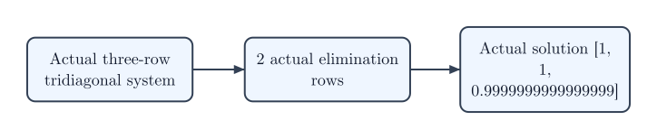
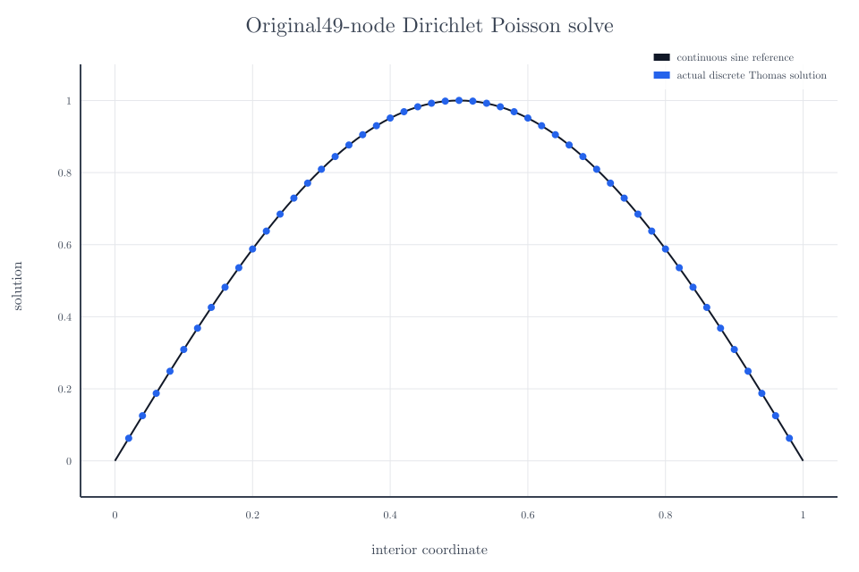
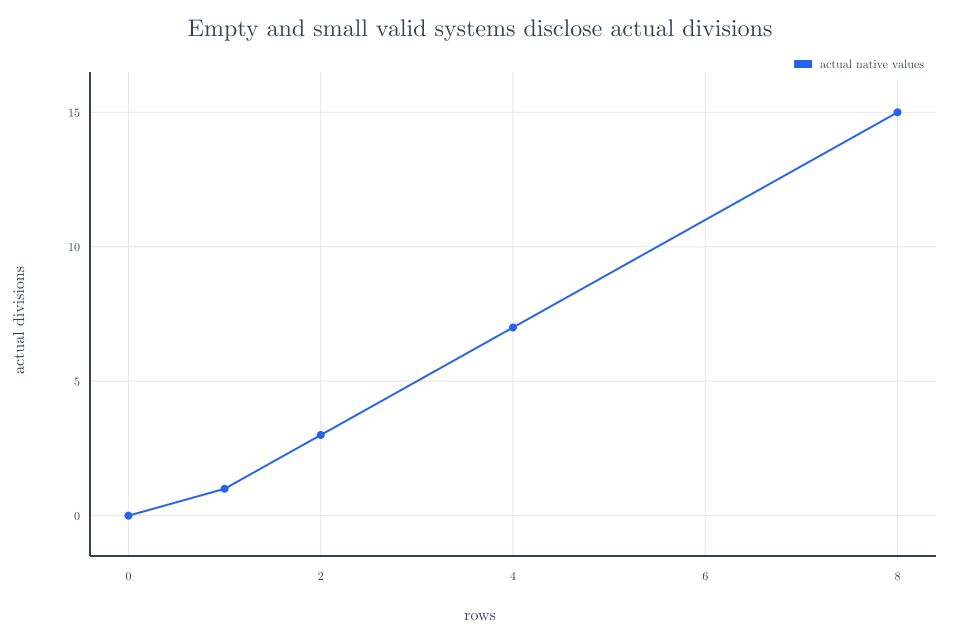
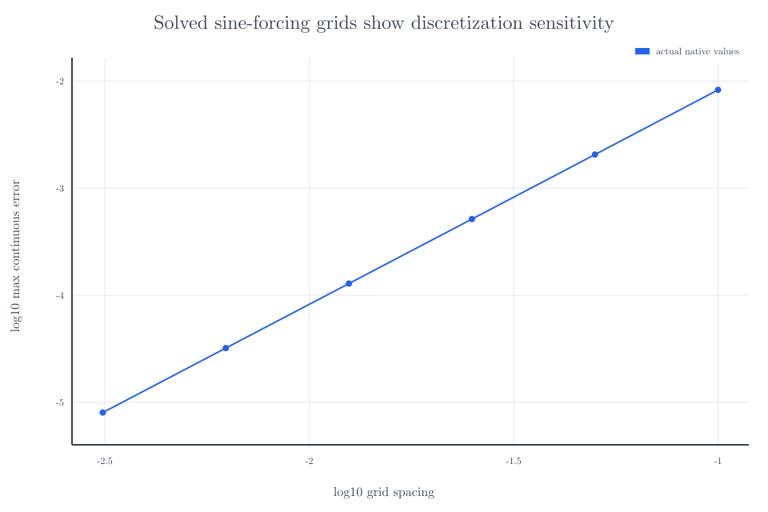

Thomas elimination: actual pivots, substitutions and discrete residuals
Abstract
A tridiagonal system needs only linear elimination and substitution work when its pivots remain usable. Actual transformed rows and returned-solution residuals retain the original49-point sine-forcing Poisson problem.
Mechanism and mathematical scope
At row i compute w=sub_i/diag_(i-1), then diag_i<-diag_i-w*super_(i-1) and rhs_i<-rhs_i-w*rhs_(i-1). Substitute from the last row upward. This is Gaussian elimination without pivoting. SPD or suitable strict diagonal dominance supplies familiar sufficient conditions; an arbitrary nonsingular tridiagonal matrix may still require pivoting. Actual zero pivots fail before division. O(n) work/storage contrasts with dense elimination. Algebraic residual b-Ax measures the returned discrete solve; the continuous sine error additionally contains finite-difference discretization error and is not the same diagnostic.
A tiny actual producing history
The table and native concept diagram read the same producing execution. Every block below is a complete editable C++ program.
#include <dm/dm.hpp>
int main() {
namespace a = dm::algorithms;
namespace g = dm::graphics;
std::filesystem::create_directories("build");
auto r = a::thomas_trace({0, -1, -1}, {2, 2, 2}, {-1, -1, 0}, {1, 0, 1});
std::print("| actual phase | row | multiplier | current pivot | transformed RHS | actual x |\n| --- | " "---: | ---: | ---: | ---: | ---: |\n");
for (const auto &s : r.steps)
std::print("| {} | {} | {:.9g} | {:.9g} | {:.9g} | {:.9g} |\n",
s.backward ? "substitute" : "eliminate", s.row, s.multiplier,
s.pivot, s.rhs, s.value);
g::Diagram concept_diagram(48, 1100);
concept_diagram.node("n0", {0, 0}, "Actual three-row tridiagonal system");
concept_diagram.node("n1", {5, 0},
std::format("{} actual elimination rows",
r.eliminations));
concept_diagram.node("n2", {10, 0}, std::format("Actual solution {}", r.x));
concept_diagram.edge("n0", "n1").edge("n1", "n2");
concept_diagram.save_svg("build/thomas_algorithm_tiny.svg");
}| actual phase | row | multiplier | current pivot | transformed RHS | actual x |
|---|---|---|---|---|---|
| eliminate | 1 | -0.5 | 1.5 | 0.5 | 0 |
| eliminate | 2 | -0.666666667 | 1.33333333 | 1.33333333 | 0 |
| substitute | 2 | 0 | 1.33333333 | 1.33333333 | 1 |
| substitute | 1 | 0 | 1.5 | 0.5 | 1 |
| substitute | 0 | 0 | 2 | 1 | 1 |

The retained original experiment
#include <dm/dm.hpp>
int main() {
namespace a = dm::algorithms;
namespace g = dm::graphics;
std::filesystem::create_directories("build");
auto grid = a::thomas_poisson_example();
auto r = a::thomas_run(grid.sub, grid.diagonal, grid.super, grid.rhs);
double error = 0;
for (std::size_t i = 0; i < r.x.size(); ++i)
error = std::max(error, std::abs(r.x[i] - grid.exact[i]));
std::print("Original49 interior nodes: max continuous sine error {:.9g}; actual discrete residual norm " "{:.9g}; actual divisions {}.\n\n| original interior x | actual solution | continuous sine " "reference | algebraic residual |\n| ---: | ---: | ---: | ---: |\n",
error, r.residual_norm, r.divisions);
for (std::size_t i = 0; i < r.x.size(); ++i)
std::print("| {:.9g} | {:.12g} | {:.12g} | {:.9g} |\n",
grid.coordinates[i], r.x[i], grid.exact[i], r.residual[i]);
std::vector<double> refx, refy;
for (int i = 0; i <= 100; ++i) {
refx.push_back(i / 100.);
refy.push_back(std::sin(std::numbers::pi * refx.back()));
}
auto chart = g::RPlot::create();
chart.lines(refx, refy, "continuous sine reference", {17, 24, 39}).points(
grid.coordinates, r.x, "actual discrete Thomas solution", {37, 99, 235},
4).title("Original49-node Dirichlet Poisson solve").x_label(
"interior coordinate").y_label("solution");
chart.save_svg("build/thomas_algorithm_original.svg");
}Original49 interior nodes: max continuous sine error 0.000329051763; actual discrete residual norm 1.67402641e-12; actual divisions 97.
| original interior x | actual solution | continuous sine reference | algebraic residual |
|---|---|---|---|
| 0.02 | 0.0628111808605 | 0.0627905195293 | -7.21644966e-15 |
| 0.04 | 0.125374474686 | 0.125333233564 | 4.37427872e-14 |
| 0.06 | 0.187442972738 | 0.187381314586 | -8.08242362e-14 |
| 0.08 | 0.248771719011 | 0.248689887165 | -5.32907052e-14 |
| 0.1 | 0.309118676962 | 0.309016994375 | 9.23705556e-14 |
| 0.12 | 0.368245684718 | 0.368124552685 | -1.19015908e-13 |
| 0.14 | 0.425919394992 | 0.425779291565 | 7.72715225e-14 |
| 0.16 | 0.481912195997 | 0.481753674102 | -7.1942452e-14 |
| 0.18 | 0.536003109731 | 0.535826794979 | -1.77635684e-13 |
| 0.2 | 0.587978664066 | 0.587785252292 | 1.15463195e-14 |
| 0.22 | 0.637633735236 | 0.637423989749 | -4.7783999e-13 |
| 0.24 | 0.684772357361 | 0.684547105929 | 3.16191517e-13 |
| 0.26 | 0.729208495833 | 0.728968627421 | 1.25233157e-13 |
| 0.28 | 0.770766781517 | 0.770513242776 | 2.0783375e-13 |
| 0.3 | 0.809283202843 | 0.809016994375 | 4.03233003e-13 |
| 0.32 | 0.844605753094 | 0.844327925502 | 6.39488462e-14 |
| 0.34 | 0.876595030302 | 0.876306680044 | 4.93827201e-13 |
| 0.36 | 0.905124787403 | 0.904827052466 | -6.03961325e-13 |
| 0.38 | 0.93008243048 | 0.929776485888 | -3.35731443e-13 |
| 0.4 | 0.951369463118 | 0.951056516295 | 1.93622895e-13 |
| 0.42 | 0.968901875125 | 0.968583161129 | 3.96127575e-13 |
| 0.44 | 0.98261047408 | 0.982287250729 | 7.99360578e-14 |
| 0.46 | 0.992441158406 | 0.992114701314 | 5.32907052e-14 |
| 0.48 | 0.998355130883 | 0.998026728428 | -1.24344979e-13 |
| 0.5 | 1.00032905176 | 1 | 3.94351218e-13 |
| 0.52 | 0.998355130883 | 0.998026728428 | -1.24344979e-13 |
| 0.54 | 0.992441158406 | 0.992114701314 | 5.32907052e-14 |
| 0.56 | 0.98261047408 | 0.982287250729 | 7.99360578e-14 |
| 0.58 | 0.968901875125 | 0.968583161129 | -5.86197757e-14 |
| 0.6 | 0.951369463118 | 0.951056516295 | 1.93622895e-13 |
| 0.62 | 0.93008243048 | 0.929776485888 | 1.19015908e-13 |
| 0.64 | 0.905124787403 | 0.904827052466 | -6.05737682e-13 |
| 0.66 | 0.876595030302 | 0.876306680044 | 4.92050845e-13 |
| 0.68 | 0.844605753094 | 0.844327925502 | -1.63424829e-13 |
| 0.7 | 0.809283202843 | 0.809016994375 | -2.78888024e-13 |
| 0.72 | 0.770766781517 | 0.770513242776 | -1.95399252e-14 |
| 0.74 | 0.729208495833 | 0.728968627421 | 1.24344979e-13 |
| 0.76 | 0.684772357361 | 0.684547105929 | -1.36779477e-13 |
| 0.78 | 0.637633735236 | 0.637423989749 | -2.13162821e-14 |
| 0.8 | 0.587978664066 | 0.587785252292 | 2.39808173e-13 |
| 0.82 | 0.536003109731 | 0.535826794979 | -1.77635684e-13 |
| 0.84 | 0.481912195997 | 0.481753674102 | -6.92779167e-14 |
| 0.86 | 0.425919394992 | 0.425779291565 | 3.06421555e-13 |
| 0.88 | 0.368245684718 | 0.368124552685 | -1.16795462e-13 |
| 0.9 | 0.309118676962 | 0.309016994375 | 9.32587341e-14 |
| 0.92 | 0.248771719011 | 0.248689887165 | -1.66533454e-13 |
| 0.94 | 0.187442972738 | 0.187381314586 | 8.94839758e-14 |
| 0.96 | 0.125374474686 | 0.125333233564 | -3.86357613e-14 |
| 0.98 | 0.0628111808605 | 0.0627905195293 | -5.10702591e-15 |

Explicit controls
#include <dm/dm.hpp>
int main() {
namespace a = dm::algorithms;
namespace g = dm::graphics;
std::filesystem::create_directories("build");
std::vector<double> x, y;
std::print("| rows | actual divisions | actual algebraic residual norm |\n| ---: | ---: | ---: |\n");
for (std::size_t n : {0, 1, 2, 4, 8}) {
auto grid = a::thomas_poisson_example(n);
auto r = a::thomas_run(grid.sub, grid.diagonal, grid.super, grid.rhs);
x.push_back(n);
y.push_back(r.divisions);
std::print("| {} | {} | {:.9g} |\n", n, r.divisions, r.residual_norm);
}
try {
a::thomas_run({0, 1}, {0, 1}, {1, 0}, {1, 2});
} catch (const std::domain_error &) {
std::print("Nonsingular matrix requiring an initial pivot exchange is explicitly rejected by this " "no-pivot solver.\n");
}
auto plot = g::RPlot::create();
plot.lines(x, y, "actual native values", {37, 99, 235}).points(
x, y, {37, 99, 235}, 4).title("Empty and small valid systems disclose actual divisions").x_label("rows").y_label("actual divisions");
plot.save_svg("build/thomas_algorithm_controls.svg");
}| rows | actual divisions | actual algebraic residual norm |
|---|---|---|
| 0 | 0 | 0 |
| 1 | 1 | 0 |
| 2 | 3 | 1.77635684e-15 |
| 4 | 7 | 3.20237283e-15 |
| 8 | 15 | 2.75227848e-14 |
Nonsingular matrix requiring an initial pivot exchange is explicitly rejected by this no-pivot solver.

Actual selected work and sensitivity
#include <dm/dm.hpp>
int main() {
namespace a = dm::algorithms;
namespace g = dm::graphics;
std::filesystem::create_directories("build");
std::vector<double> x, y;
std::print("| interior rows | actual eliminated rows | actual substitutions | max continuous sine error " "|\n| ---: | ---: | ---: | ---: |\n");
for (std::size_t n : {9, 19, 39, 79, 159, 319}) {
auto grid = a::thomas_poisson_example(n);
auto r = a::thomas_run(grid.sub, grid.diagonal, grid.super, grid.rhs);
double err = 0;
for (std::size_t i = 0; i < n; ++i)
err = std::max(err, std::abs(r.x[i] - grid.exact[i]));
x.push_back(std::log10(1. / (n + 1)));
y.push_back(std::log10(err));
std::print("| {} | {} | {} | {:.9g} |\n", n, r.eliminations,
r.substitutions, err);
}
auto plot = g::RPlot::create();
plot.lines(x, y, "actual native values", {37, 99, 235}).points(
x, y, {37, 99, 235}, 4).title("Solved sine-forcing grids show discretization sensitivity").x_label("log10 grid spacing").y_label("log10 max continuous error");
plot.save_svg("build/thomas_algorithm_work.svg");
}| interior rows | actual eliminated rows | actual substitutions | max continuous sine error |
|---|---|---|---|
| 9 | 8 | 9 | 0.00826541697 |
| 19 | 18 | 19 | 0.00205870676 |
| 39 | 38 | 39 | 0.000514200478 |
| 79 | 78 | 79 | 0.000128520384 |
| 159 | 158 | 159 | 3.21282378e-05 |
| 319 | 318 | 319 | 8.03194336e-06 |

API and interpretation
All four vector lengths and every supplied finite value are checked, including unused boundary coefficients. Matching empty inputs return empty. The retained fixture uses diagonal2/h2, active off-diagonal-1/h2 and forcing pi^2*sin(pi*x), preserving the original scaling. Actual zero pivots and nonfinite arithmetic fail; no numerical stability or forward-error certificate is inferred solely from a small residual.
Reusable producers, fixtures and histories live in the canonical C++ library. Captured records own their values and do not come from a separate report replay. Selected counters and record/scalar policies are specified at their API boundaries; they are not peak-byte or wall-time budgets. Synthetic structural inputs are controlled fixtures for these mechanisms.
References
- Thomas tridiagonal Gaussian elimination; recurrence and no-pivot assumptions stated above
Verified in the shared ten-document batch: 70 scoped native cases;20 directly
instrumented ASan/UBSan cases;75 executable public examples;387/387 definitions
across25 full scopes;10 hovers;9766 independent records/134784 checks;frozen
valid-input comparisons across all ten families;13 checkout/installed standalone
headers and linked ten-family consumer;40 executed programs and40 inspected
figures with both exports. Receipts: build/mepml-conversion/batch-394-403/.